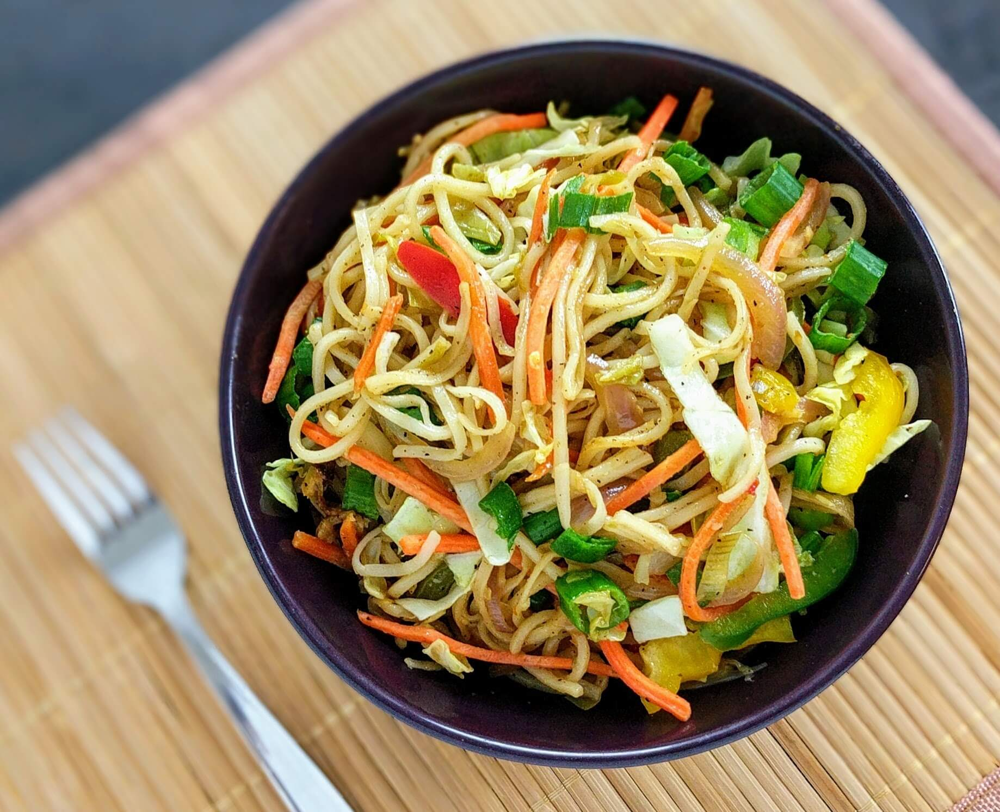

Ingredients

- 1 cup cooked noodles
- 1 large clove of garlic, chopped
- 1/2 cup spring onion, chopped (white and green separated)
- 1/4 cup carrots, thin strips
- 1/4 cup baby corn, thin strips
- 1/4 cup capsicum, thin strips
- 1/2 cup bean sprouts
- 1 tsp soy sauce
- 1 tsp oil, salt
Instructions
- Heat oil in non-stick pan and add garlic.
- Add white spring onions, carots, baby corn, capsicum, bean sprouts, and salt.
- Saute over high flame for 3-4 mins.
- Add noodles, soy sauce, green spring onions, and saute for another 2 mins.
- Serve immediately.